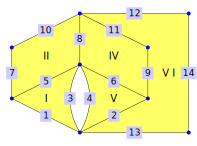

Chapter 3 introduces the elementary access operations for the incidence geometry. But if one works with those geometries in practice, one notices that some tasks are quite cumbersome with those tools, for example:
Given a face and an incident edge, what is the other face incident to the edge?
Given a triangular face and an incident vertex, which edge is opposite to that vertex?
For which pairs of adjacent vertices do both of the vertices fulfill some property?
All of the methods in this chapter only require a few lines of code with the tools of chapter 3. Nevertheless, having them makes programming a bit simpler as one can focus on higher-order structures. In addition, each method will feature an explanation how the desired result can be achieved with the tools from chapter 3, so that each user can adapt them for their own special circumstances.
TODO overview of sections
We will use the following polygonal complex to exemplify the methods in this chapter:

gap> complex := PolygonalComplexByDownwardIncidence( > [[1,2],[2,5],[2,6],[2,6],[1,6],[5,6],[1,7],[6,8],[5,9],[7,8],[8,9], > [8,12],[2,13],[12,13]], > [[1,3,5],[5,7,8,10],,[6,8,9,11],[2,4,6],[2,9,11,12,13,14]]);;
This section is concerned with movement along edges, i.e. the relation between vertices and edges. It contains the following methods (illustrated on the polygonal complex from the start of chapter 10):
IsVerticesAdjacent (10.1-1) checks whether two vertices are adjacent (i.e. connected by an edge).
gap> IsVerticesAdjacent( complex, 1, 2 ); true gap> IsVerticesAdjacent( complex, 7, 12 ); false gap> IsVerticesAdjacent( complex, 2, 2 ); false
Edge(s)BetweenVertices (10.1-2) returns the edge (or edges) between two vertices.
gap> EdgeBetweenVertices( complex, 1, 2 ); 1 gap> EdgesBetweenVertices( complex, 1, 2 ); [ 1 ] gap> EdgeBetweenVertices( complex, 2, 6 ); fail gap> EdgesBetweenVertices( complex, 2, 6 ); [ 3, 4 ] gap> EdgeBetweenVertices( complex, 7, 9 ); fail gap> EdgesBetweenVertices( complex, 7, 9 ); [ ]
OtherVertexOfEdge (10.1-3) takes an edge and an incident vertex and returns the other incident vertex of the given edge.
gap> OtherEdgeOfVertexInFace( complex, 1, 5, 2 ); 7
‣ IsVerticesAdjacent( complex, v1, v2 ) | ( operation ) |
‣ IsVerticesAdjacentNC( complex, v1, v2 ) | ( operation ) |
Returns: true or false
The method IsVerticesAdjacent checks whether two given vertices of a twisted polygonal complex are adjacent, i.e. whether they are connected by an edge.
The NC-version does not check whether v1 and v2 are vertices of the given twisted polygonal complex.
As an example consider the polygonal complex from the start of chapter 10:
gap> IsVerticesAdjacent( complex, 1, 2 ); true gap> IsVerticesAdjacent( complex, 7, 12 ); false gap> IsVerticesAdjacent( complex, 2, 2 ); false gap> IsVerticesAdjacent( complex, 2, 6 ); true
This method can be implemented with the methods from chapter 3:
gap> Set([v1,v2]) in VerticesOfEdges(complex);
‣ EdgesBetweenVertices( complex, v1, v2 ) | ( operation ) |
‣ EdgesBetweenVerticesNC( complex, v1, v2 ) | ( operation ) |
‣ EdgeBetweenVertices( complex, v1, v2 ) | ( operation ) |
‣ EdgeBetweenVerticesNC( complex, v1, v2 ) | ( operation ) |
Returns: A set of edges
The method EdgesBetweenVertices returns the set of all edges that are incident to both given vertices of a twisted polygonal complex. If there is exactly one edge incident to both vertices, EdgeBetweenVertices directly returns this edge (or fail if this is not the case).
The NC-versions do not check whether v1 and v2 are vertices of the given twisted polygonal complex.
As an example consider the polygonal complex from the start of chapter 10:
gap> EdgeBetweenVertices( complex, 1, 2 ); 1 gap> EdgesBetweenVertices( complex, 1, 2 ); [ 1 ] gap> EdgeBetweenVertices( complex, 2, 6 ); fail gap> EdgesBetweenVertices( complex, 2, 6 ); [ 3, 4 ] gap> EdgeBetweenVertices( complex, 7, 9 ); fail gap> EdgesBetweenVertices( complex, 7, 9 ); [ ]
The method EdgesBetweenVertices can be implemented with the methods from chapter 10:
gap> Intersection( EdgesOfVertex(complex,v1), EdgesOfVertex(complex,v2) );
‣ OtherVertexOfEdge( complex, vertex, edge ) | ( operation ) |
‣ OtherVertexOfEdgeNC( complex, vertex, edge ) | ( operation ) |
Returns: a positive integer
Every edge in a polygonal complex is incident to exactly two vertices. Given one of them, this method returns the other one. For a twisted polygonal complex, an edge might only be incident to one vertex. This method will return the same vertex if it is given.
The NC-version does not check whether the given edge is an edge of the twisted polygonal complex and whether the given vertex is incident to it.
As an example consider the polygonal complex that was introduced at the start of chapter 10:
gap> OtherVertexOfEdge(complex, 7, 10); 8 gap> OtherVertexOfEdge(complex, 1, 5); 6 gap> OtherVertexOfEdge(complex, 6, 8); 8
This method can be implemented with the methods from chapter 3. We only give the implementation for polygonal complexes, since the implementation for twisted polygonal complexes only includes an additional case distinction.
gap> Difference( VerticesOfEdge(complex, edge), [ vertex ] )[1];
This section is concerned with the movement within a face, i.e. the computation of related elements in a fixed face. This includes the following methods (illustrated with the polygonal complex from the start of chapter 10):
EdgeInFaceByVertices (10.2-1) returns the edge of a face that is incident to two vertices (and fail otherwise).
gap> EdgeInFaceByVertices( complex, 5, [2,6] ); 4 gap> EdgeInFaceByVertices( complex, 4, [6,9] ); fail
OtherEdgeOfVertexInFace (10.2-2) is given a vertex, an edge, and a face (all of them incident). It returns the other edge incident to both the vertex and the face (or fail).
gap> OtherEdgeOfVertexInFace( complex, 1, 5, 2 ); 7
OppositeVertexOfEdgeInTriangle (10.2-3) is given an edge and an incident face (which has to be a triangle) and returns the unique vertex that is incident to the face but not to the edge. Currently, this is only supported for polygonal complexes.
gap> OppositeVertexOfEdgeInTriangle( complex, 3, 1 ); 1
OppositeEdgeOfVertexInTriangle (10.2-4) is given a vertex and an incident face (which has to be a triangle) and returns the unique edge that is incident to the face but not to the vertex. Currently, this is only supported for polygonal complexes.
gap> OppositeEdgeOfVertexInTriangle( complex, 5, 5 ); 4
‣ EdgeInFaceByVertices( complex, face, verts ) | ( operation ) |
‣ EdgeInFaceByVerticesNC( complex, face, verts ) | ( operation ) |
‣ EdgesInFaceByVertices( complex, face, verts ) | ( operation ) |
‣ EdgesInFaceByVerticesNC( complex, face, verts ) | ( operation ) |
Returns: a positive integer or fail
If the method EdgeInFaceByVertices is given a face and a list of two vertices of a twisted polygonal complex, it returns the edge that lies in the given face and is incident to the given vertices, if possible.
If there is no such edge (because the given vertices are not incident to the given face or because they are not connected by an edge of the face), or if there are several of these edges (this might happen for twisted polygonal complexes) it returns fail.
The method EdgesInFaceByVertices takes the same arguments but returns the set of all edges fulfilling this specification.
The NC-versions do not check if face is a face of the given twisted polygonal complex.
As an example consider the polygonal complex from the start of chapter 10:
gap> EdgeInFaceByVertices(complex, 5, [2,6]); 4 gap> EdgeInFaceByVertices(complex, 1, [2,1]); 1 gap> EdgeInFaceByVertices(complex, 1, [2,6]); 3 gap> EdgeInFaceByVertices(complex, 2, [1,2]); fail gap> EdgeInFaceByVertices(complex, 4, [5,8]); fail
The method EdgesInFaceByVertices can be implemented with the methods of chapter 3:
gap> Intersection( EdgesOfFace(complex, face), > EdgesOfVertex(complex, verts[1]), EdgesOfVertex(complex, verts[2]) );
‣ OtherEdgeOfVertexInFace( complex, vertex, edge, face ) | ( operation ) |
‣ OtherEdgeOfVertexInFaceNC( complex, vertex, edge, face ) | ( operation ) |
‣ OtherEdgesOfVertexInFace( complex, vertex, edge, face ) | ( operation ) |
‣ OtherEdgesOfVertexInFaceNC( complex, vertex, edge, face ) | ( operation ) |
Returns: a positive integer or fail
If the method OtherEdgeOfVertexInFace is given a vertex, an edge, and a face of a twisted polygonal complex, it returns the other edge incident to the vertex and the face, if possible.
For a twisted polygonal complex it might happen that only one or more than two edges are incident to both vertex and face. In this case fail is returned.
The method OtherEdgesOfVertexInFace returns the set of all edges satisfying this restriction.
The NC-version does not check whether the given vertex, edge, and face actually lie in the complex and are incident to each other.
As an example consider the polygonal complex that was introduced at the start of chapter 10:
gap> OtherEdgeOfVertexInFace(complex, 1, 5, 2); 7 gap> OtherEdgeOfVertexInFace(complex, 5, 9, 4); 6 gap> OtherEdgeOfVertexInFace(complex, 1, 5, 1); 1
The method OtherEdgesOfVertexInFace can be implemented with the methods of chapter 3:
gap> Difference( Intersection( EdgesOfFace(complex, face), > EdgesOfVertex(complex, vertex) ), [ edge ] );
‣ OppositeVertexOfEdgeInTriangle( complex, edge, face ) | ( operation ) |
‣ OppositeVertexOfEdgeInTriangleNC( arg1, arg2, arg3 ) | ( operation ) |
Returns: a positive integer
If the method OppositeVertexOfEdgeInTriangle is given an edge and a face of a polygonal complex, such that the edge is incident to the face and the face is a triangle, then it returns the unique vertex incident to the face, but not the edge.
The NC-version does not check whether the given edge and face actually lie in the complex, are incident to each other and whether the given face is a triangle.
As an example consider the polygonal complex that was introduced at the start of chapter 10:
gap> OppositeVertexOfEdgeInTriangle( complex, 1, 1 ); 6 gap> OppositeVertexOfEdgeInTriangle( complex, 3, 1 ); 1 gap> OppositeVertexOfEdgeInTriangle( complex, 5, 1 ); 2 gap> OppositeVertexOfEdgeInTriangle( complex, 2, 5 ); 6 gap> OppositeVertexOfEdgeInTriangle( complex, 4, 5 ); 5 gap> OppositeVertexOfEdgeInTriangle( complex, 6, 5 ); 2
This method can be implemented with the methods of chapter 10:
gap> Difference( VerticesOfFace(complex,face), VerticesOfEdge(complex,edge) );
‣ OppositeEdgeOfVertexInTriangle( complex, vertex, face ) | ( operation ) |
‣ OppositeEdgeOfVertexInTriangleNC( arg1, arg2, arg3 ) | ( operation ) |
Returns: a positive integer
If the method OppositeEdgeOfVertexInTriangle is given a vertex and a face of a polygonal complex, such that the vertex is incident to the face and the face is a triangle, then it returns the unique edge incident to the face, but not the vertex.
The NC-version does not check whether the given vertex and face actually lie in the complex, are incident to each other and whether the given face is a triangle.
As an example consider the polygonal complex that was introduced at the start of chapter 10:
gap> OppositeEdgeOfVertexInTriangle( complex, 1, 1 ); 3 gap> OppositeEdgeOfVertexInTriangle( complex, 2, 1 ); 5 gap> OppositeEdgeOfVertexInTriangle( complex, 6, 1 ); 1 gap> OppositeEdgeOfVertexInTriangle( complex, 2, 5 ); 6 gap> OppositeEdgeOfVertexInTriangle( complex, 5, 5 ); 4 gap> OppositeEdgeOfVertexInTriangle( complex, 6, 5 ); 2
This method can be implemented with the methods of chapter 10:
gap> Difference( EdgesOfFace(complex,face), EdgesOfVertex(complex,vertex) );
This section contains methods for the movement between faces, i.e. whether faces are adjacent and, if so, by which edge. It includes the following methods (illustrated on the polygonal complex from the start of chapter 10):
IsFacesAdjacent (10.3-1) checks whether two faces are adjacent (i.e. if they are different but there is an edge incident to both).
gap> IsFacesAdjacent( complex, 1, 2 ); true gap> IsFacesAdjacent( complex, 1, 4 ); false
Edge(s)BetweenFaces (10.3-2) returns the edge (or edges) between two faces.
gap> EdgeBetweenFaces( complex, 2, 4 ); 8 gap> EdgesBetweenFaces( complex, 2, 4 ); [ 8 ] gap> EdgeBetweenFaces( complex, 4, 6 ); fail gap> EdgesBetweenFaces( complex, 4, 6 ); [ 9, 11 ] gap> EdgeBetweenFaces( complex, 2, 5 ); fail gap> EdgesBetweenFaces( complex, 2, 5 ); [ ]
NeighbourFace(s)ByEdge (10.3-3) returns the face (or the set of faces) that is adjacent to the given face (with respect to the given edge).
gap> NeighbourFaceByEdge( complex, 2, 8 ); 4 gap> NeighbourFacesByEdge( complex, 2, 8 ); [ 4 ]
‣ IsFacesAdjacent( complex, f1, f2 ) | ( operation ) |
‣ IsFacesAdjacentNC( complex, f1, f2 ) | ( operation ) |
Returns: true or false
The method IsFacesAdjacent checks whether two given faces of a twisted polygonal complex are adjacent, i.e. whether they are connected by an edge.
The NC-version does not check whether f1 and f2 are faces of the given twisted polygonal complex.
As an example consider the polygonal complex from the start of chapter 10:
gap> IsFacesAdjacent( complex, 1, 2 ); true gap> IsFacesAdjacent( complex, 1, 4 ); false gap> IsFacesAdjacent( complex, 2, 2 ); false gap> IsFacesAdjacent( complex, 4, 5 ); true
This method can be implemented with the methods from chapter 3:
gap> Set([f1,f2]) in FacesOfEdges(complex);
‣ EdgesBetweenFaces( complex, f1, f2 ) | ( operation ) |
‣ EdgesBetweenFacesNC( complex, f1, f2 ) | ( operation ) |
‣ EdgeBetweenFaces( complex, f1, f2 ) | ( operation ) |
‣ EdgeBetweenFacesNC( complex, f1, f2 ) | ( operation ) |
Returns: A set of edges
The method EdgesBetweenFaces returns the set of all edges that are incident to both given faces of a twisted polygonal complex. If there is exactly one edge incident to both faces, EdgeBetweenFaces directly returns this edge (or fail if this is not the case).
The NC-versions do not check whether f1 and f2 are faces of the given twisted polygonal complex.
As an example consider the polygonal complex from the start of chapter 10:
gap> EdgeBetweenFaces( complex, 2, 4 ); 8 gap> EdgesBetweenFaces( complex, 2, 4 ); [ 8 ] gap> EdgeBetweenFaces( complex, 4, 6 ); fail gap> EdgesBetweenFaces( complex, 4, 6 ); [ 9, 11 ] gap> EdgeBetweenFaces( complex, 2, 5 ); fail gap> EdgesBetweenFaces( complex, 2, 5 ); [ ]
The method EdgesBetweenFaces can be implemented with the methods from chapter 10:
gap> Intersection( EdgesOfFace(complex,f1), EdgesOfFace(complex,f2) );
‣ NeighbourFaceByEdge( complex, face, edge ) | ( operation ) |
‣ NeighbourFaceByEdgeNC( complex, face, edge ) | ( operation ) |
‣ NeighbourFacesByEdge( complex, face, edge ) | ( operation ) |
‣ NeighbourFacesByEdgeNC( complex, face, edge ) | ( operation ) |
Returns: a positive integer or fail
If the method NeighbourFacesByEdge is given a face and an edge, it returns the set of all faces that are also incident to this edge. In a polygonal complex, these have to be different from the given face. In a twisted polygonal complex, this might not be the case.
If the set of these neighbours contains exactly one face, this face is returned by NeighbourFaceByEdge. Otherwise, this method returns fail.
The NC-version does not check whether the given edge is an edge of the polygonal complex and whether the given face is an incident face of the complex.
As an example consider the polygonal complex that was introduced at the start of chapter 10:
gap> NeighbourFaceByEdge(complex, 2, 8); 4 gap> NeighbourFaceByEdge(complex, 1, 5); 2 gap> NeighbourFaceByEdge(complex, 4, 6); 5 gap> NeighbourFaceByEdge(complex, 1, 3); fail gap> NeighbourFaceByEdge(complex, 6, 12); fail
This method can be implemented with the methods from chapter 3. We only give the implementation for polygonal complexes, since the implementation for twisted polygonal complexes only includes an additional case distinction.
gap> Difference( FacesOfEdge(complex, edge), [ face ] )[1];
In many cases it is necessary to find all vertices fulfilling a certain property. Consider the polygonal complex from the start of chapter 10:
If we want to know all vertices that are incident to exactly three or four faces, we can use the Filtered-command.
gap> Filtered( Vertices(complex), v -> FaceDegreeOfVertex(complex,v) in [3, 4] ); [ 2, 5, 6, 8 ]
While this is a good method to find vertices, edges and faces with individual properties, it quickly becomes complicated if one searches for more complicated structures.
For example, assume we are interested in all edges, whose incident vertices are both incident to three or four faces. We could write a function to check this property:
gap> Is34Edge := function( complex, edge ) > local vertices; > > vertices := VerticesOfEdge(complex, edge); > return FaceDegreeOfVertex(complex, vertices[1]) in [3,4] and > FaceDegreeOfVertex(complex, vertices[2]) in [3,4]; > end; function( complex, edge ) ... end gap> Filtered( Edges(complex), e -> Is34Edge(complex, e) ); [ 2, 3, 4, 6, 8 ]
With the knowledge how sublists can be produced, the condition can be expressed more succintly:
gap> edge := 8;; gap> vertices := VerticesOfEdge(complex, edge); [ 6, 8 ] gap> FaceDegreesOfVertices(complex){vertices}; [ 4, 3 ] gap> IsSubset( [3,4], Set(last) ); true
Then a single Filtered-command could be used as well.
gap> Filtered( Edges(complex), e -> > IsSubset( [3,4], > Set(FaceDegreesOfVertices(complex){ VerticesOfEdge(complex, e) } ) > ) ); [ 2, 3, 4, 6, 8 ]
But even though this is technically a one-liner, it is still quite complicated for a rather simple-seeming task. Therefore this section contains some methods to simplify some of these situations.
Unfortunately, many special situations will still require writing custom functions, as there is (as of yet) no way to test for arbitrary substructures with arbitrary properties.
This section contains the following shortcuts:
Localising adjacent vertices fulfilling certain properties. These may be returned as pairs of vertices (AdjacentVerticesWithProperties, see 10.4-1) or as edges (EdgesWithVertexProperties, see 10.4-2).
Localising faces whose vertices (or edges) fulfill certain properties. The available methods are FacesWithVertexProperties (10.4-3) and FacesWithEdgeProperties (10.4-4).
‣ AdjacentVerticesWithProperties( complex, prop1, prop2 ) | ( operation ) |
‣ AdjacentVerticesWithProperties( complex, propList ) | ( operation ) |
‣ AdjacentVerticesWithProperty( complex, prop ) | ( operation ) |
Returns: a set of tuples of positive integers
For a given twisted polygonal complex complex the method AdjacentVerticesWithProperties(complex, prop1, prop2) returns all pairs of vertices [v_1,v_2] such that v_1 fulfills property prop1 and v_2 fulfills property prop2.
The two properties can be given as list [prop1, prop2] as well.
A property can be given in two ways (otherwise an error will be thrown);
As a function prop with two arguments. Then, for a given vertex v, it is checked whether prop(complex, v) is true.
As a function prop with one argument. Then, for a given vertex v, it is checked whether prop(v) is true. In particular, it is assumed that the given function depends on complex (otherwise there can be strange results).
For the alternative method AdjacentVerticesWithProperty there are two differences:
Both vertices have to fulfill the same property
If [v_1,v_2] is a valid answer, then [v_2,v_1] also would be. Therefore only the smaller one of these is returned.
As an example consider the polygonal complex that was introduced at the start of chapter 10:
gap> AdjacentVerticesWithProperty(complex, > v -> FaceDegreeOfVertex(complex,v) = 3); [ [ 2, 5 ] ] gap> VertexNotIncidentToTriangle := function(complex, vertex) > local faces; > > faces := FacesOfVertex(complex, vertex); > return ForAll( faces, f -> Length(EdgesOfFace(complex,f)) <> 3 ); > end;; gap> AdjacentVerticesWithProperty( complex, VertexNotIncidentToTriangle ); [ [ 7, 8 ], [ 8, 9 ], [ 8, 12 ], [ 12, 13 ] ] gap> gap> AdjacentVerticesWithProperties( complex, > v -> FaceDegreeOfVertex(complex, v) = 2, > v -> FaceDegreeOfVertex(complex, v) = 3); [ [ 1, 2 ], [ 9, 5 ], [ 9, 8 ] ] gap> AdjacentVerticesWithProperties(complex, VertexNotIncidentToTriangle, > v -> IsInnerVertex(complex, v)); [ [ 8, 9 ], [ 9, 5 ] ]
Note for efficient computations: The only way to provide a general method like AdjacentVerticesWithProperties is by wrapping the properties into functions. Unfortunately, calling a function introduces an overhead. In particular, if the executed instructions are very fast (for example a small computation or a list lookup), then the overhead by the function call may be as time intensive as the actual computation. Therefore, if high efficiency is required and the functionality of this method is time critical, it is probably more efficient to manually implement the functionality into the code.
‣ EdgesWithVertexProperties( complex, prop1, prop2 ) | ( operation ) |
‣ EdgesWithVertexProperties( complex, propList ) | ( operation ) |
‣ EdgesWithVertexProperty( complex, prop ) | ( operation ) |
Returns: a set of positive integers
For a given twisted polygonal complex complex the method EdgesWithVertexProperty(complex, prop) returns the set of all edges such that both of its vertices fulfill property prop.
A property can be given in two ways (otherwise an error will be thrown);
As a function prop with two arguments. Then, for a given vertex v, it is checked whether prop(complex, v) is true.
As a function prop with one argument. Then, for a given vertex v, it is checked whether prop(v) is true. In particular, it is assumed that the given function depends on complex (otherwise there can be strange results).
The alternative method EdgesWithVertexProperties(complex, prop1, prop2) returns the set of all edges such that one of the incident vertices in the edge fulfills prop1 and the other fulfills property prop2.
The two properties can be given as list [prop1, prop2] as well.
As an example consider the polygonal complex that was introduced at the start of chapter 10:
gap> EdgesWithVertexProperty(complex, v -> IsBoundaryVertex(complex, v)); [ 5, 7, 8, 10, 12, 14 ] gap> NotAdjacentToInnerVertex := function(complex, vertex) > local edges, otherVerts; > > edges := EdgesOfVertex(complex, vertex); > otherVerts := List(edges, e -> OtherVertexOfEdge(complex, vertex, e)); > return ForAll( otherVerts, v -> not IsInnerVertex(complex, v) ); > end;; gap> EdgesWithVertexProperty(complex, NotAdjacentToInnerVertex); [ 7, 14 ] gap> gap> EdgesWithVertexProperties(complex, > v -> IsBoundaryVertex(complex, v), > v -> IsRamifiedVertex(complex, v) ); [ 1, 3, 4, 13 ] gap> EdgesWithVertexProperties(complex, NotAdjacentToInnerVertex, > v -> IsRamifiedVertex(complex, v)); [ 1, 13 ]
Note for efficient computations: The only way to provide a general method like EdgesWithVertexProperties is by wrapping the properties into functions. Unfortunately, calling a function introduces an overhead. In particular, if the executed instructions are very fast (for example a small computation or a list lookup), then the overhead by the function call may be as time intensive as the actual computation. Therefore, if high efficiency is required and the functionality of this method is time critical, it is probably more efficient to manually implement the functionality into the code.
‣ FacesWithVertexProperties( complex, propList ) | ( operation ) |
‣ FacesWithVertexProperty( complex, prop ) | ( operation ) |
Returns: a set of positive integers
For a given twisted polygonal complex complex the method FacesWithVertexProperty(complex, prop) returns the set of all faces such that all of its incident vertices fulfill property prop.
A property can be given in two ways (otherwise an error will be thrown);
As a function prop with two arguments. Then, for a given vertex v, it is checked whether prop(complex, v) is true.
As a function prop with one argument. Then, for a given vertex v, it is checked whether prop(v) is true. In particular, it is assumed that the given function depends on complex (otherwise there can be strange results).
The alternative method FacesWithVertexProperties(complex, propList) returns the set of all faces such that each of the incident vertices in the face fulfills one property of propList, such that every entry is fulfilled exactly once (this implies in particular that the number of incident vertices is equal to Length(propList)).
Empty positions in this list are filled with the function that always returns true.
As an example consider the polygonal complex that was introduced at the start of chapter 10:
gap> FacesWithVertexProperty( complex, v -> not IsInnerVertex(complex,v) ); [ 1, 2 ] gap> TwoBoundaryEdgesIncident := function(complex, vertex) > local edges, boundEdges; > > edges := EdgesOfVertex(complex, vertex); > boundEdges := Filtered(edges, e -> IsBoundaryEdge(complex, e)); > return Length(boundEdges) = 2; > end;; gap> FacesWithVertexProperty( complex, TwoBoundaryEdgesIncident ); [ 2 ] gap> gap> FacesWithVertexProperties( complex, [ TwoBoundaryEdgesIncident, > v -> IsRamifiedVertex(complex, v), > v -> FaceDegreeOfVertex(complex, v) = 2 ] ); [ 1 ] gap> FacesWithVertexProperties( complex, [ TwoBoundaryEdgesIncident, > v -> IsRamifiedVertex(complex, v), > v -> EdgeDegreeOfVertex(complex, v) = 3 ] ); [ 1, 5 ] gap> FacesWithVertexProperties( complex, [ TwoBoundaryEdgesIncident, , , > v -> IsInnerVertex(complex, v)] ); [ 4 ]
Note for efficient computations: The only way to provide a general method like FacesWithVertexProperties is by wrapping the properties into functions. Unfortunately, calling a function introduces an overhead. In particular, if the executed instructions are very fast (for example a small computation or a list lookup), then the overhead by the function call may be as time intensive as the actual computation. Therefore, if high efficiency is required and the functionality of this method is time critical, it is probably more efficient to manually implement the functionality into the code.
‣ FacesWithEdgeProperties( complex, propList ) | ( operation ) |
‣ FacesWithEdgeProperty( complex, prop ) | ( operation ) |
Returns: a set of positive integers
For a given twisted polygonal complex complex the method FacesWithEdgeProperty(complex, prop) returns the set of all faces such that all of its incident edges fulfill property prop.
A property can be given in two ways (otherwise an error will be thrown);
As a function prop with two arguments. Then, for a given edge e, it is checked whether prop(complex, e) is true.
As a function prop with one argument. Then, for a given edge e, it is checked whether prop(e) is true. In particular, it is assumed that the given function depends on complex (otherwise there can be strange results).
The alternative method FacesWithEdgeProperties(complex, propList) returns the set of all faces such that each of the incident edges in the face fulfills one property of propList, such that every entry is fulfilled exactly once (this implies in particular that the number of incident edges is equal to Length(propList)).
Empty positions in this list are filled with the function that always returns true.
As an example consider the polygonal complex that was introduced at the start of chapter 10:
gap> FacesWithEdgeProperty(complex, e -> IsInnerEdge(complex, e)); [ 4 ] gap> InnerEdgeOrRamifiedVertex := function( complex, edge ) > local verts; > > if IsInnerEdge(complex, edge) then > return true; > fi; > > verts := VerticesOfEdge(complex, edge); > return ForAny(verts, v -> IsRamifiedVertex(complex, v)); > end;; gap> FacesWithEdgeProperty( complex, InnerEdgeOrRamifiedVertex ); [ 1, 4, 5 ] gap> gap> FacesWithEdgeProperties(complex, [ > e -> IsInnerEdge(complex, e), > InnerEdgeOrRamifiedVertex, > e -> IsBoundaryEdge(complex, e)]); [ 1, 5 ] gap> FacesWithEdgeProperties(complex, [ , , > e -> IsBoundaryEdge(complex, e), InnerEdgeOrRamifiedVertex]); [ 2 ]
Note for efficient computations: The only way to provide a general method like FacesWithEdgeProperties is by wrapping the properties into functions. Unfortunately, calling a function introduces an overhead. In particular, if the executed instructions are very fast (for example a small computation or a list lookup), then the overhead by the function call may be as time intensive as the actual computation. Therefore, if high efficiency is required and the functionality of this method is time critical, it is probably more efficient to manually implement the functionality into the code.
‣ CommonVerticesOfEdges( complex, edge1, edge2 ) | ( operation ) |
‣ CommonVerticesOfEdges( complex, edgeList ) | ( operation ) |
‣ CommonVerticesOfEdgesNC( complex, edge1, edge2 ) | ( operation ) |
‣ CommonVerticesOfEdgesNC( complex, edgeList ) | ( operation ) |
Returns: a set of positive integers
The method CommonVerticesOfEdges(complex, edge1, edge2) returns the set of all vertices that are incident to edge1 and edge2. The NC-version does not check whether the given edge1 and edge2 is an edge of complex.
The method CommonVerticesOfEdges(complex, edgeList) returns the set of all vertices that are incident to all the edges in edgeList. The NC-version does not check whether the given edges in edgeList are an edge of complex.
As an example consider the polygonal complex from the start of chapter 10:
gap> CommonVerticesOfEdges(complex,8,9); [ ] gap> CommonVerticesOfEdges(complex,8,6); [ 6 ] gap> CommonVerticesOfEdges(complex,[8,6,5]); [ 6 ]
‣ CommonEdgesOfFaces( complex, face1, face2 ) | ( operation ) |
‣ CommonEdgesOfFaces( complex, faceList ) | ( operation ) |
‣ CommonEdgesOfFacesNC( complex, face1, face2 ) | ( operation ) |
‣ CommonEdgesOfFacesNC( complex, faceList ) | ( operation ) |
Returns: a set of positive integers
The method CommonEdgesOfFaces(complex, face1, face2) returns the set of all edges that are incident to face1 and face2. The NC-version does not check whether the given face1 and face2 is a face of complex.
The method CommonEdgesOfFaces(complex, faceList) returns the set of all edges that are incident to all the faces in faceList. The NC-version does not check whether the given faces in faceList are a face of complex.
As an example consider the polygonal complex from the start of chapter 10:
gap> CommonEdgesOfFaces(complex,[6,4]); [ 9, 11 ]
‣ CommonVerticesOfFaces( complex, face1, face2 ) | ( operation ) |
‣ CommonVerticesOfFaces( complex, faceList ) | ( operation ) |
‣ CommonVerticesOfFacesNC( complex, face1, face2 ) | ( operation ) |
‣ CommonVerticesOfFacesNC( complex, faceList ) | ( operation ) |
Returns: a set of positive integers
The method CommonVerticesOfFaces(complex, face1, face2) returns the set of all vertices that are incident to face1 and face2. The NC-version does not check whether the given face1 and face2 is a face of complex.
The method CommonEdgesOfFaces(complex, faceList) returns the set of all vertices that are incident to all the faces in faceList. The NC-version does not check whether the given faces in faceList are a face of complex.
As an example consider the polygonal complex from the start of chapter 10:
gap> CommonVerticesOfFaces(complex,1,4); [ 6 ] gap> CommonVerticesOfFaces(complex,6,4); [ 5, 8, 9 ]
‣ CommonEdgesOfVertices( complex, vertex1, vertex2 ) | ( operation ) |
‣ CommonEdgesOfVertices( complex, vertexList ) | ( operation ) |
‣ CommonEdgesOfVerticesNC( complex, vertex1, vertex2 ) | ( operation ) |
‣ CommonEdgesOfVerticesNC( complex, vertexList ) | ( operation ) |
Returns: a set of positive integers
The method CommonEdgesOfVertices(complex, vertex1, vertex2) returns the set of all edges that are incident to vertex1 and vertex2. The NC-version does not check whether the given vertex1 and vertex2 is a vertex of complex.
The method CommonEdgesOfVertices(complex, vertexList) returns the set of all edges that are incident to all the vertices in vertexList. The NC-version does not check whether the given vertices in vertexList are a vertex of complex.
As an example consider the polygonal complex from the start of chapter 10:
gap> CommonEdgesOfVertices(complex,6,2); [ 3, 4 ]
‣ CommonFacesOfEdges( complex, edge1, edge2 ) | ( operation ) |
‣ CommonFacesOfEdges( complex, edgeList ) | ( operation ) |
‣ CommonFacesOfEdgesNC( complex, edge1, edge2 ) | ( operation ) |
‣ CommonFacesOfEdgesNC( complex, edgeList ) | ( operation ) |
Returns: a set of positive integers
The method CommonFacesOfEdges(complex, edge1, edge2) returns the set of all faces that are incident to edge1 and edge2. The NC-version does not check whether the given edge1 and edge2 is an edge of complex.
The method CommonFacesOfEdges(complex, edgeList) returns the set of all faces that are incident to all the edges in edgeList. The NC-version does not check whether the given edges in edgeList are an edge of complex.
As an example consider the polygonal complex from the start of chapter 10:
gap> CommonFacesOfEdges(complex,9,12); [ 6 ] gap> CommonFacesOfEdges(complex,[9,11]); [ 4, 6 ]
‣ CommonFacesOfVertices( complex, vertex1, vertex2 ) | ( operation ) |
‣ CommonFacesOfVertices( complex, vertexList ) | ( operation ) |
‣ CommonFacesOfVerticesNC( complex, vertex1, vertex2 ) | ( operation ) |
‣ CommonFacesOfVerticesNC( complex, vertexList ) | ( operation ) |
Returns: a set of positive integers
The method CommonFacesOfVertices(complex, vertex1, vertex2) returns the set of all faces that are incident to vertex1 and vertex2. The NC-version does not check whether the given vertex1 and vertex2 is a vertex of complex.
The method CommonFacesOfVertices(complex, vertexList) returns the set of all faces that are incident to all the vertices in vertexList. The NC-version does not check whether the given vertices in vertexList are a vertex of complex.
As an example consider the polygonal complex from the start of chapter 10:
gap> CommonFacesOfVertices(complex,9,5); [ 4, 6 ] gap> CommonFacesOfVertices(complex,[6,8]); [ 2, 4 ]
generated by GAPDoc2HTML